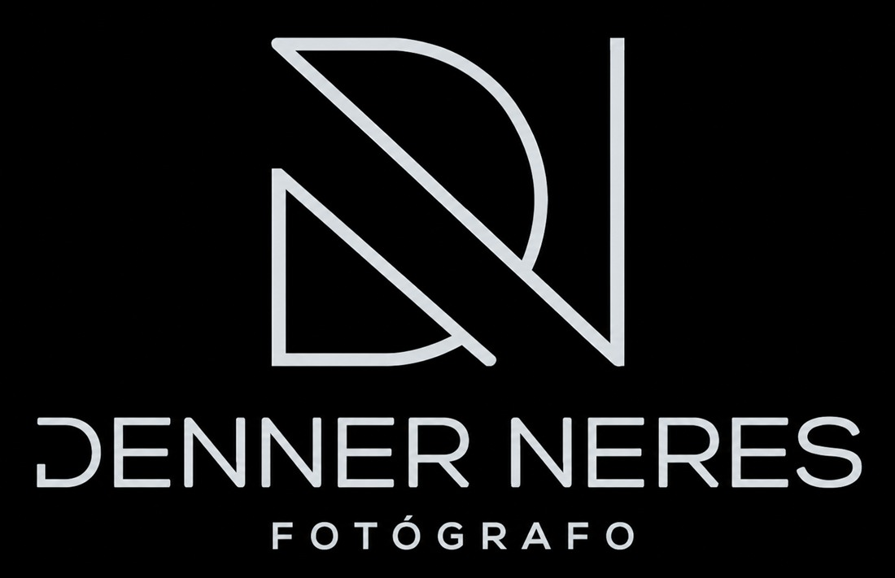

Casamentos Ensaios Eventos
Fotografia com cenografia autoral e planejada, feita para guardar o que importa.
O fotógrafo
Sou Denner Neres, fotógrafo em Ouvidor, Goiás. Cuido de casamentos, ensaios e eventos com cenografia autoral e planejada, para que cada história seja contada com o seu próprio cenário.
#eternizandomomentos
Portfólio
@dennerneresfoto
Veja mais no InstagramServiços
Em movimento
Deslize para ver os outros. Toque no vídeo central para ligar ou desligar o som.
Agendamentos e orçamentos
Atendimento apenas pelo WhatsApp.
(64) 99613-2005